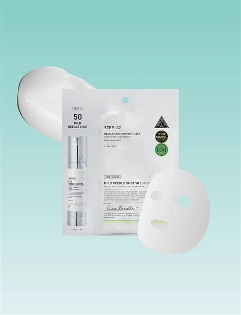
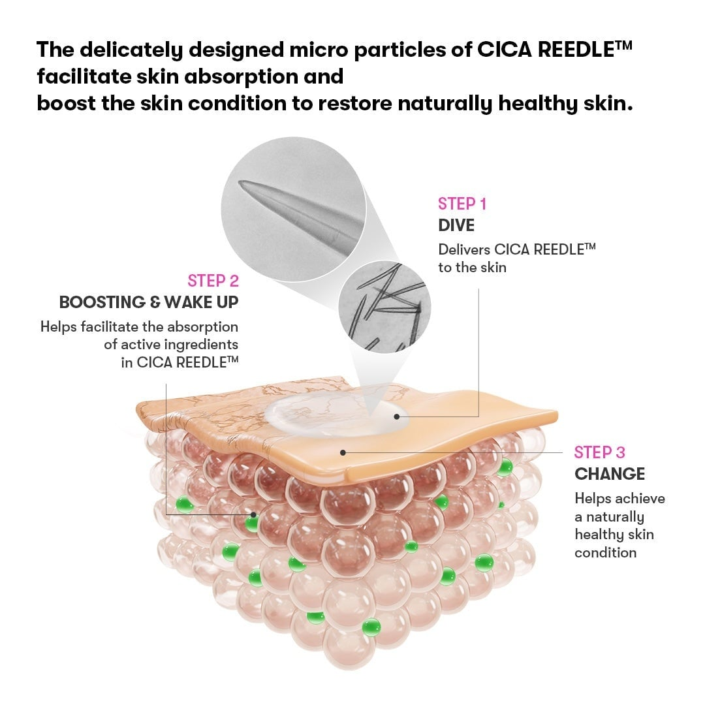
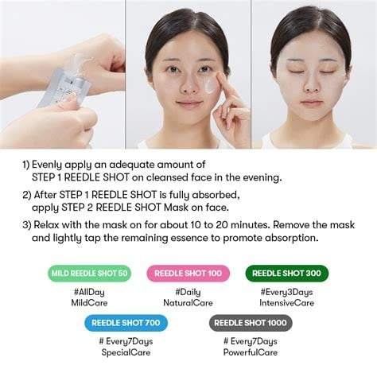
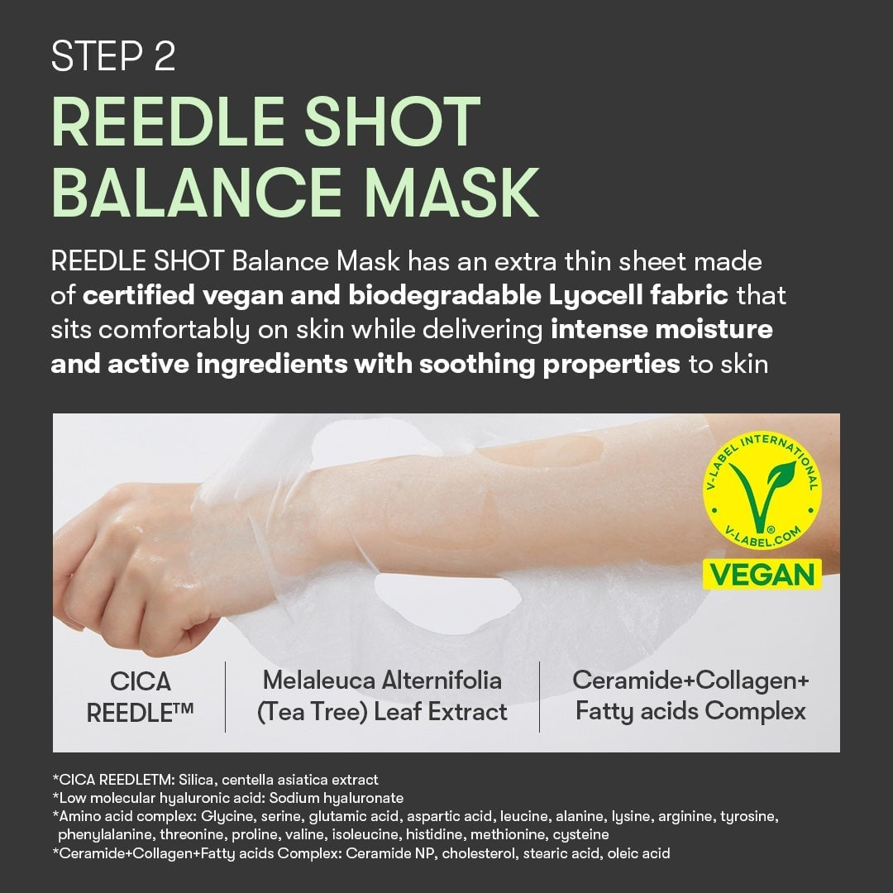
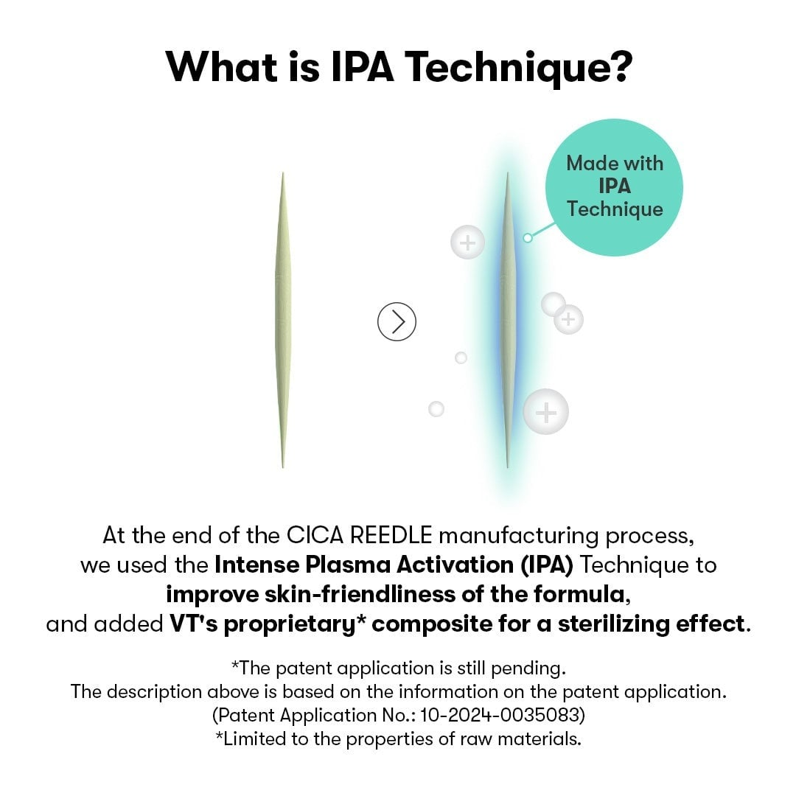

<div> <table style="border-collapse: collapse; width: 100.029%;" border="1"><colgroup><col style="width: 49.9285%;"><col style="width: 49.9285%;"></colgroup> <tbody> <tr> <td><span style="font-size: 14pt;">Designul curat și minimalist al măștii VT Cosmetics Mild Reedle Shot 50, prezentat alături de șervețelul textil ultra-fin pe un fundal pastelat. Acest sistem ingenios &icirc;mbină esența activă cu proprietățile intens hidratante ale măștii pentru un efect rapid de re&icirc;mprospătare.</span></td> <td></td> </tr> <tr> <td></td> <td><span style="font-size: 14pt;">Mecanismul inovator din spatele tehnologiei Cica Reedle&trade;, ale cărei micro-particule delicate optimizează absorbția &icirc;n profunzime a ingredientelor active. Procesul transformă vizibil textura pielii, trezind-o la viață și red&acirc;ndu-i strălucirea naturală și aspectul sănătos.</span></td> </tr> <tr> <td><span style="font-size: 14pt;">Ghidul simplu pentru ritualul de seară &icirc;n doi pași, menit să maximizeze regenerarea cutanată. După aplicarea și absorbția completă a esenței Reedle Shot, masca textilă desăv&acirc;rșește tratamentul &icirc;n 10-20 de minute, fiind adaptată pentru diferite niveluri de intensitate ale tenului.</span></td> <td></td> </tr> <tr> <td></td> <td><span style="font-size: 14pt;">Proprietățile calmante ale măștii Reedle Shot Balance Mask, realizată dintr-o țesătură ultra-subțire de Lyocell, certificată vegan și biodegradabilă. Infuzia bogată de extract de arbore de ceai, colagen și ceramide &icirc;mbracă pielea &icirc;ntr-o hidratare intensă pentru o senzație absolută de confort.</span></td> </tr> <tr> <td><span style="font-size: 14pt;">Secretul toleranței ridicate: tehnologia patentată Intense Plasma Activation (IPA) aplicată micro-acelelor Cica Reedle&trade;. Acest tratament avansat &icirc;mbunătățește compatibilitatea cu pielea și adaugă un efect sterilizant proprietăților brute, garant&acirc;nd o &icirc;ngrijire profundă, sigură și extrem de prietenoasă cu tenul.</span></td> <td></td> </tr> <tr> <td></td> <td></td> </tr> </tbody> </table> </div>